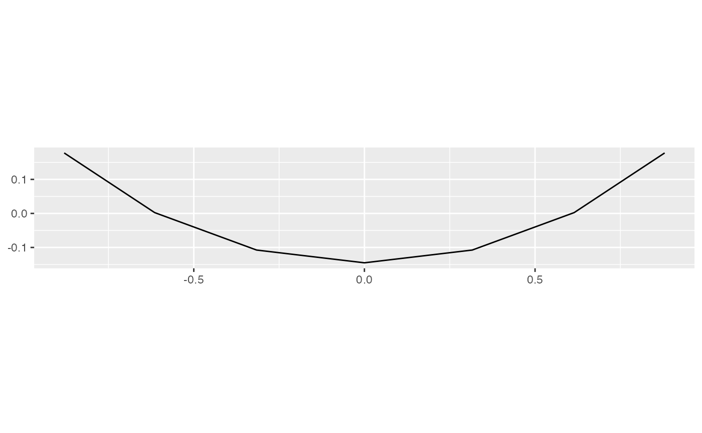

Compute distance matrix from bases.
path_dist(history)
| history | history of the plots |
|---|
if (FALSE) { grand <- interpolate(save_history(flea[, 1:6], max = 50), 0.2) # The grand tour ----------------------------- # Look at the tour path in a tour, how well does it cover a sphere # Using MDS d <- path_dist(grand) ord <- as.data.frame(MASS::isoMDS(d)$points) qplot(V1, V2, data = ord, geom="path") + coord_equal() + labs(x = NULL, y = NULL) } # 5 guided tours ----------------------------- holes1d <- guided_tour(holes(), 1) tries <- replicate(5, save_history(flea[, 1:6], holes1d, max = 10), simplify = FALSE)#>#> Value 0.490 946.2 % better - NEW BASIS #> Value 0.204 -58.4 % better #> Value 0.755 54.0 % better - NEW BASIS #> Value 1.070 41.7 % better - NEW BASIS #> Value 1.307 22.2 % better - NEW BASIS #> Value 1.347 3.1 % better - NEW BASIS #> Value 1.358 0.8 % better - NEW BASIS #> Value 1.367 0.6 % better - NEW BASIS #> Value 1.368 0.1 % better #> Value 1.368 0.1 % better - NEW BASIS #> Value 1.369 0.0 % better #> Value 1.369 0.0 % better #> Value 1.369 0.1 % better #> Value 1.368 0.0 % better #> Value 1.369 0.1 % better #> Value 1.369 0.1 % better #> Value 1.369 0.0 % better #> Value 1.369 0.0 % better #> Value 1.369 0.0 % better #> Value 1.369 0.0 % better #> Value 1.369 0.1 % better #> Value 1.369 0.1 % better #> Value 1.369 0.1 % better #> Value 1.369 0.0 % better #> Value 1.369 0.1 % better #> Value 1.369 0.0 % better #> Value 1.369 0.0 % better #> Value 1.369 0.0 % better #> Value 1.369 0.1 % better #> Value 1.369 0.0 % better #> Value 1.369 0.1 % better #> Value 1.369 0.0 % better #> Value 1.369 0.0 % better #> Value 1.369 0.1 % better #> No better bases found after 25 tries. Giving up. #> Final projection: #> 0.357 0.332 0.363 0.351 0.520 0.487#>#> Value 0.864 296.3 % better - NEW BASIS #> Value 0.770 -10.9 % better #> Value 0.427 -50.6 % better #> Value 0.984 14.0 % better - NEW BASIS #> Value 1.179 19.8 % better - NEW BASIS #> Value 1.191 1.0 % better - NEW BASIS #> Value 1.282 7.6 % better - NEW BASIS #> Value 1.343 4.8 % better - NEW BASIS #> Value 1.350 0.5 % better - NEW BASIS #> Value 1.358 0.6 % better - NEW BASIS #> Value 1.369 0.8 % better - NEW BASIS #> Value 1.369 0.0 % better #> Value 1.369 0.0 % better #> Value 1.369 0.0 % better #> Value 1.369 0.0 % better #> Value 1.369 0.0 % better #> Value 1.369 0.0 % better #> Value 1.369 0.0 % better #> Value 1.369 0.0 % better #> Value 1.369 0.0 % better #> Value 1.369 0.0 % better #> Value 1.369 0.0 % better #> Value 1.369 0.0 % better #> Value 1.369 0.0 % better #> Value 1.369 0.0 % better #> Value 1.369 0.0 % better #> Value 1.369 0.0 % better #> Value 1.369 0.0 % better #> Value 1.369 0.0 % better #> Value 1.369 0.0 % better #> Value 1.369 0.0 % better #> Value 1.369 0.0 % better #> Value 1.369 0.0 % better #> Value 1.369 0.0 % better #> Value 1.369 0.0 % better #> No better bases found after 25 tries. Giving up. #> Final projection: #> -0.375 -0.333 -0.399 -0.356 -0.478 -0.483#>#> Value 0.985 228.1 % better - NEW BASIS #> Value 1.071 8.7 % better - NEW BASIS #> Value 1.203 12.3 % better - NEW BASIS #> Value 1.334 10.9 % better - NEW BASIS #> Value 1.343 0.7 % better - NEW BASIS #> Value 1.354 0.8 % better - NEW BASIS #> Value 1.368 1.0 % better - NEW BASIS #> Value 1.369 0.0 % better #> Value 1.368 0.0 % better #> Value 1.368 0.0 % better #> Value 1.369 0.1 % better #> Value 1.369 0.0 % better #> Value 1.369 0.0 % better #> Value 1.369 0.1 % better #> Value 1.369 0.1 % better #> Value 1.368 0.0 % better #> Value 1.368 0.0 % better #> Value 1.369 0.1 % better #> Value 1.369 0.1 % better #> Value 1.368 0.0 % better #> Value 1.369 0.1 % better #> Value 1.368 0.0 % better #> Value 1.369 0.1 % better #> Value 1.369 0.1 % better #> Value 1.368 0.0 % better #> Value 1.369 0.1 % better #> Value 1.369 0.1 % better #> Value 1.369 0.1 % better #> Value 1.368 0.0 % better #> Value 1.369 0.1 % better #> Value 1.369 0.1 % better #> No better bases found after 25 tries. Giving up. #> Final projection: #> 0.364 0.310 0.373 0.380 0.515 0.472#>#> Value 0.472 504.7 % better - NEW BASIS #> Value 0.866 83.5 % better - NEW BASIS #> Value 1.263 45.7 % better - NEW BASIS #> Value 1.298 2.8 % better - NEW BASIS #> Value 1.348 3.9 % better - NEW BASIS #> Value 1.367 1.4 % better - NEW BASIS #> Value 1.369 0.1 % better - NEW BASIS #> Value 1.369 0.0 % better #> Value 1.369 0.0 % better #> Value 1.369 0.0 % better #> Value 1.369 0.0 % better #> Value 1.369 0.0 % better #> Value 1.369 0.0 % better #> Value 1.369 0.0 % better #> Value 1.369 0.0 % better #> Value 1.369 0.0 % better #> Value 1.369 0.0 % better #> Value 1.369 0.0 % better #> Value 1.369 0.0 % better #> Value 1.369 0.0 % better #> Value 1.369 0.0 % better #> Value 1.369 0.0 % better #> Value 1.369 0.0 % better #> Value 1.369 0.0 % better #> Value 1.369 0.0 % better #> Value 1.369 0.0 % better #> Value 1.369 0.0 % better #> Value 1.369 0.0 % better #> Value 1.369 0.0 % better #> Value 1.369 0.0 % better #> Value 1.369 0.0 % better #> No better bases found after 25 tries. Giving up. #> Final projection: #> 0.355 0.353 0.403 0.362 0.494 0.460#>#> Value 0.160 435.2 % better - NEW BASIS #> Value 0.361 125.8 % better - NEW BASIS #> Value 1.133 214.4 % better - NEW BASIS #> Value 1.276 12.5 % better - NEW BASIS #> Value 1.335 4.7 % better - NEW BASIS #> Value 1.351 1.2 % better - NEW BASIS #> Value 1.368 1.3 % better - NEW BASIS #> Value 1.369 0.0 % better #> Value 1.369 0.0 % better #> Value 1.369 0.1 % better #> Value 1.369 0.0 % better #> Value 1.369 0.0 % better #> Value 1.369 0.0 % better #> Value 1.369 0.1 % better #> Value 1.369 0.0 % better #> Value 1.369 0.0 % better #> Value 1.369 0.0 % better #> Value 1.369 0.0 % better #> Value 1.369 0.0 % better #> Value 1.369 0.0 % better #> Value 1.369 0.1 % better #> Value 1.369 0.0 % better #> Value 1.369 0.0 % better #> Value 1.369 0.0 % better #> Value 1.369 0.0 % better #> Value 1.369 0.0 % better #> Value 1.369 0.0 % better #> Value 1.369 0.0 % better #> Value 1.369 0.0 % better #> Value 1.369 0.1 % better #> Value 1.369 0.0 % better #> No better bases found after 25 tries. Giving up. #> Final projection: #> -0.372 -0.341 -0.388 -0.325 -0.497 -0.492tries2 <- lapply(tries, interpolate, 0.2) bases <- unlist(lapply(tries2, as.list), recursive = FALSE) class(bases) <- "history_list" index_values <- paths_index(tries2, holes()) d <- path_dist(bases) ord <- as.data.frame(cmdscale(d, 2)) info <- cbind(ord, index_values) if (require("ggplot2")) { qplot(step, value, data = info, geom="line", group = try) qplot(V1, V2, data = info, geom="path", group = try) + geom_point(aes(size = value)) + coord_equal() last_plot() + facet_wrap(~ try) }